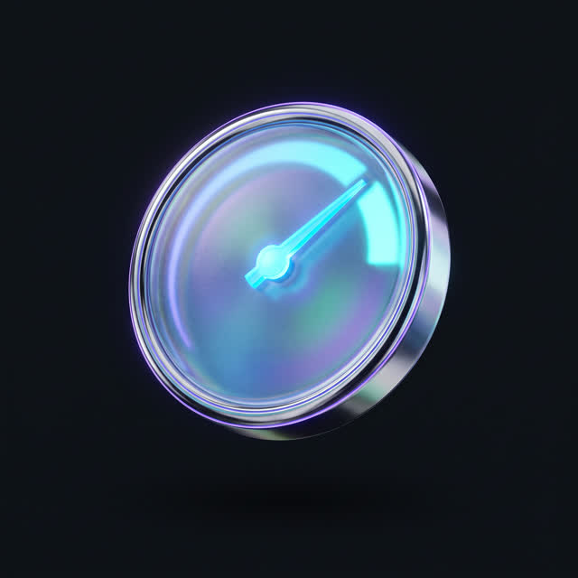
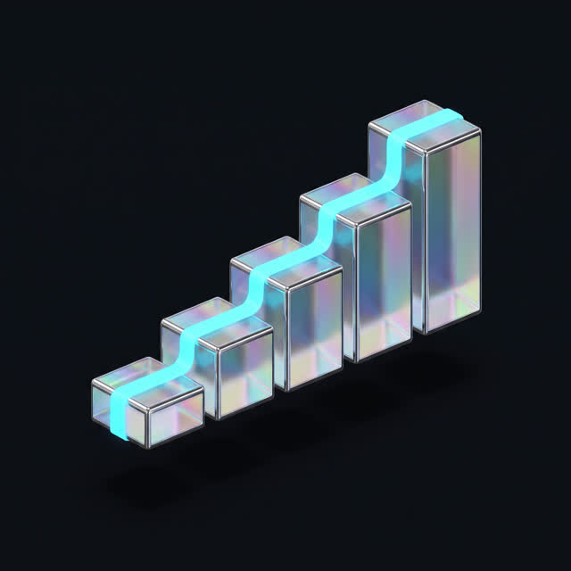
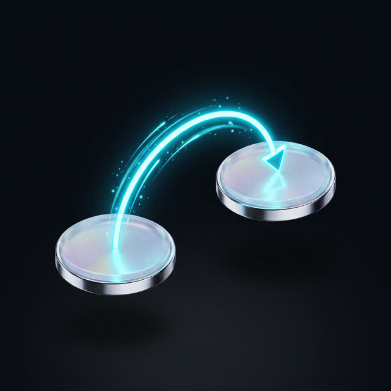
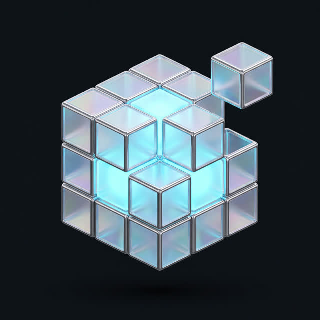
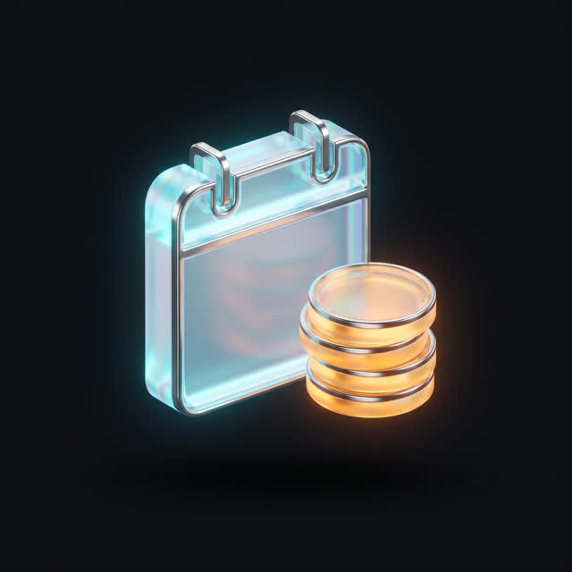
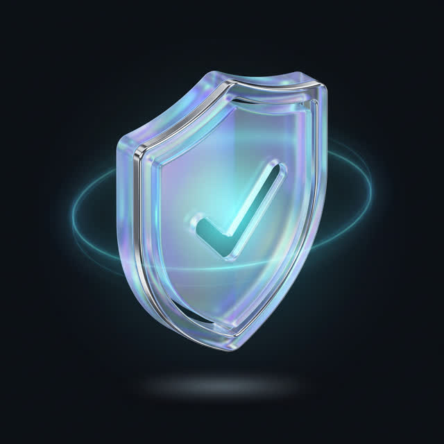

Emin değilseniz
Teklif sihirbazında kapsamı birlikte çıkaralım; süre ve bütçe bandını ekranda görün.
Kapsam çıkaralımKURUMSAL SİTE · E-TİCARET · ÖZEL YAZILIM · AI ENTEGRASYONU
Hazır tema kurmuyoruz; ön yüzü projeye özel yazıyoruz. Kurumsal site, e-ticaret, özel yazılım, AI entegrasyonu ve bakım tek ekipten yürür. Teslim 15–30 iş günü; hesaplar ve kaynak dosyalar sizde.
↑ ÜÇÜNDEN BİRİNE BASIN — ÖLÇÜM KATMANINDA KARŞILIĞI YANAR
schema.org · Organization · Service · BreadcrumbList
Üçü aynı anda kurulur; ölçüm ve anlamsal yapı sonradan eklenmez.
Beş alt hizmet aynı tasarım sistemi ve aynı ölçüm şeması üzerinde çalışır.
Teklif sihirbazında kapsamı birlikte çıkaralım; süre ve bütçe bandını ekranda görün.
Kapsam çıkaralımHangi kapsam size uygun, birlikte çıkaralımBeş adım, iki dakika. Ekranda süre ve fiyat aralığı çıkar.
Çıkardığımız band, tek dilli ve sınırlı şablonlu bir kurumsal siteyi esas alır. KDV teklifte belirtilir; e-ticaret ve özel yazılım ayrı fiyatlanır. Bandı belirleyen beş şey:
Kapsamı görmeden rakam söylemiyoruz; şablon sayısı ve entegrasyonlar netleşmeden verilen sayı ya sizi ya bizi yanıltır — nedenini aşağıda anlattık. Konuşmaya kapsam çıkararak başlıyoruz.
Projenizin bandını ekranda görünZorunlu alan yalnızca ad ve telefon.
Çoğu site bozuk değil; başka birinin işi için tasarlanmış bir şablonun üzerine sizin içeriğiniz konmuş. Şablon kurmuyoruz. Farkı anlatmıyor, ölçüyoruz: sayfa ağırlığınızı bizdekiyle yan yana koyuyoruz.
En çok gelen sorular ve kısa cevapları. Ayrıntısı başka bölümdeyse cevabın sonunda bağlantı var.
Kurumsal bir site 15–30 iş gününde teslim edilir. Takvimi asıl uzatan kalem kod değil içerik: metin, fotoğraf ve logo dosyaları geciktiğinde sonraki bütün adımlar kayıyor.
Hangi işin hangi günlerde yapıldığını takvim bölümündeki tabloda yazdık.
Gecikme olduğunda haber verip yeni tarihi yazılı veriyoruz, sessizce sürüklemiyoruz. Takvimi aşamalara böldüğümüz için gecikmenin hangi aşamada ve kimden kaynaklandığı görünür kalıyor.
Gecikmenin kaynağını ve telafisini “İşler ters giderse” bölümünde madde madde yazdık.
Revizyon turlarının sayısı ve her turun neyi kapsadığı teklifte kalem kalem yazılır; imzadan önce görürsünüz. Yayından sonra ayrıca 30 gün düzeltme desteği var, o sürede çıkan hatalar ücretsiz düzeltiliyor.
Metin ve fotoğraf sizden geliyor; ikisi de fiyata dahil değil. İhtiyaç olursa metin yazarlığı ve çekimi ayrı kalem olarak planlıyoruz.
Hazır tema; bütçesi sınırlı olan ve siteden tek beklentisi internette görünür olmak olan işletme için doğru karardır. Özel tasarım, siteden ölçülebilir telefon, form ve satış bekleyen işletmeler için anlamlıdır.
İki yaklaşımın karşılaştırma tablosunu “hazır tema ile özel tasarım arasındaki fark” bölümünde yazdık.
İçerik yayınlayan ve ürün satan işlerin çoğunda WordPress ve WooCommerce yeterlidir. Özel yazılım, hazır sistemin karşılamadığı iş akışları için gerekir: bayi paneli, rezervasyon, yetki yönetimi, ERP’ye bağlanan süreçler.
Tek kişilik bir iş için freelancer daha ucuz ve genelde yeterlidir. Ajans; tasarım, yazılım, reklam ve içerik aynı anda yürüyorsa ve işin iki yıl sonra da ayakta kalması gerekiyorsa anlamlı oluyor.
Fark yetenek değil, süreklilik ve kapsam. Tek kişi hastalandığında ya da başka işe geçtiğinde proje durur; sekiz kişilik ekipte iş devam eder ve muhatabınız değişmez. Kaynak dosyaların, panel erişimlerinin ve dokümantasyonun kimde durduğu da yazılı olur. Buna karşılık küçük ve tek seferlik bir işte ajans yapısı gereksiz maliyet yaratır.
Büyük ihtimalle evet: 2026 itibarıyla 14 yılda 120 marka için 165 proje tamamladık, yakın bir işte çalışmış olma ihtimalimiz yüksek. Sizin sektörünüzde deneyimimiz yoksa bunu ilk görüşmede söylüyoruz.
Sektöre göre neyin değiştiğini “Sektöre göre değişen şey tasarım değil” bölümünde yazdık.
Diğer modüller
Mobil Uygulama iOS ve Android; web ile ortak API ve tasarım sistemi. Meta & Google Ads Hesaplar sizin adınıza; reklamın ineceği sayfaları biz kuruyoruz. Video Prodüksiyon Tek çekimden reklam, Reels ve ürün videosu. SEO Hizmetleri Teknik SEO, içerik ve yerel görünürlük.Süreç, taşıma, yayın sonrası ve mevzuat tarafının tamamı burada — açıp okuyun, kapatın.
İki sayıyı bulun: son üç ayda kaç kişi geldi, kaçı size ulaştı. Bilmiyorsanız ilk iş tasarım değil, ölçüm.
| Durumunuz | Doğru adım | Neden |
|---|---|---|
| Site açılıyor, trafik var, kimse aramıyor | Mevcut site üzerinde hız ve dönüşüm düzeltmesi | Sıfırdan yapmak bu sorunu çözmez, hata tekrarlanır |
| Tek bir hizmet satıyorsunuz, trafiğin tamamı reklamdan geliyor | Tek sayfalık açılış sayfası | On iki sayfalık kurumsal yapı burada sadece maliyet ekliyor |
| Birden fazla hizmet, farklı hedef kitle, blog, çok dil | Kurumsal site | Her hizmetin kendi sayfası olmadan aramada bulunamazsınız |
| Ürün satıyorsunuz; stok, kargo ve ödeme işin içinde | E-ticaret | Sonradan sepet eklemek, baştan e-ticaret kurmaktan pahalı |
| İş akışınızın karşılığı hazır üründe yok (bayi, rezervasyon, saha ekibi) | Özel yazılım | Eklenti yığınıyla taklit edilen akış altı ayda bakılamaz oluyor |
| Site iki yaşında, çalışıyor, sadece görsel olarak eskimiş | Yüzey yenilemesi | Altyapı sağlamsa yeniden yazmak para yakmaktır |
Bütçeniz özel tasarımı taşımıyorsa bizimle çalışmayın. O bütçede iyi seçilmiş bir hazır tema ve doğru yazılmış beş sayfa, kötü yapılmış bir “özel tasarım”dan iyidir.
Hastane ile otel sitesini ayıran şey renk paleti değil, sayfanın kurtarmak zorunda olduğu an.
Sağlık Bakanlığı'nın tanıtım mevzuatı Türkçe yayında fiyatı, hasta deneyimini ve öncesi-sonrası görselini sınırlıyor; içerik mimarisini bu süzgece göre kuruyoruz.
Sitenin işi satışı bitirmek değil, kişiyi kararlı halde rezervasyon motoruna taşımak. Yavaş açılan galeri rezervasyon kaybettiriyor.
Ziyaretçilerin çoğu ürün sayfasına arama sonucundan ya da reklamdan doğrudan iniyor; bütçenin ağırlığını ürün sayfası şablonuna, site içi aramaya ve varyant–stok görünümüne koyuyoruz.
Ziyaretçi az, teklif başına değer yüksek; işi yapan şey teknik doküman, ürün kodu araması ve indirilebilir katalog.
Karar veren kişi telefondan, akşam saatlerinde bakıyor: konum, fotoğraf ve tek dokunuşla arama.
Hız, diğer dört modülün getirisini belirleyen çarpan. Hız optimizasyonu proje sonundaki temizlik değil, ilk günün mimari kararı.

Şu anda ölçüldü
—sn
Bu sayfa sizin cihazınızda ve sizin bağlantınızda bu sürede açıldı; rakamı biz yazmıyoruz, tarayıcınız ölçüyor.
Doğrulamak için F12 → Ağ sekmesini açıp sayfayı yenileyin; değer bağlantınıza göre değişir.Google'ın “iyi” saydığı eşikler net: LCP 2,5 saniyenin altında, INP 200 milisaniyenin altında, CLS 0,1'in altında. Ölçüm masaüstünde değil mobilde ve gerçek kullanıcı verisinin 75. yüzdeliğinde yapılır — yani ziyaretçilerin dörtte üçü bu değerin altında kalmalı.
Teslimde bu üç değeri öncesi–sonrası ölçüp yazılı veriyoruz.

Kapsam darsa bandın alt ucunda, çok dilli yapı ve entegrasyon eklendikçe üst ucunda kalıyor.
| İş günü | Bizde ne var | Sizden ne bekleniyor |
|---|---|---|
| 1–5. gün | Keşif, mevcut sitenin ölçümü, adres envanteri | Karar vericinin toplantıda olması |
| 5–9. gün | Bilgi mimarisi ve ana sayfa tasarımı | Logo kaynak dosyaları, marka malzemeleri, metin taslakları |
| 9–15. gün | İç sayfa şablonları, mobil düzen, tasarım sistemi | Tasarım onayı — tek turda toplu |
| 15–21. gün | Kodlama, yönetim paneli, içerik girişi | Son metinler ve gerçek fotoğraflar |
| 21–25. gün | Entegrasyonlar, form ve ölçüm kurulumu, hız çalışması | Test hesapları; ödeme ve kargo erişimleri |
| 25–30. gün | Cihaz testleri, kırık bağlantı taraması, yayın, yönlendirmeler | Ekibinizin testi ve yayın onayı |
| Sonraki 30 gün | Düzeltme desteği, panel eğitimi, ilk ölçüm okuması | Eğitime katılacak kişilerin belirlenmesi |
Takvimi uzatan şey kod değil, bekleyen metin; içerik teslim tarihleri de takvimde yazılı.
Tek muhatabınız oluyor ve her hafta aynı gün kısa bir durum notu gidiyor.

Sık duyduğumuz cümle: “yeni site yaptırdık, trafiğimiz düştü”.
Sebebi tasarım değil: arama motorunun tanıdığı eski adresler değişiyor, karşılığı tanımlanmazsa ziyaretçi hata sayfası görüyor.
Taşımada izlediğimiz sıra:
İlk iki üç haftada dalgalanma oluyor; arama motoru yeni yapıyı yeniden tarıyor. Hiç düşmeyeceğini söyleyene inanmayın — söz verilebilecek şey, sebebin taşıma hatası olmaması.

Maliyeti büyüten şey sayfa sayısı değil, farklı şablon sayısı.
Bütçeyi şablon çeşidini azaltarak düşürürsünüz; teklifte hangi şablonların yazılacağı adıyla listelenir.
Teklif alırken sorun: arayüz hangi temanın üzerine kuruluyor, tema ve eklenti lisansları kimin hesabına kayıtlı?

Yayından on iki ay sonra ne ödeyeceğiniz aşağıdaki tabloda.
| Kalem | Sıklık | Kime ödenir | Not |
|---|---|---|---|
| Alan adı yenileme | Yıllık | Kayıt sağlayıcısı | Sizin adınıza kayıtlı |
| Hosting veya sunucu | Yıllık ya da aylık | Barındırma firması | Trafik büyüdükçe paket değişir |
| SSL sertifikası | Yıllık | Sertifika sağlayıcısı | Çoğu sitede ücretsiz, otomatik yenilenir |
| Tema ve eklenti lisansları | Yıllık | Sağlayıcı | Döviz üzerinden faturalanır |
| Kurumsal e-posta | Aylık ya da yıllık | Servis sağlayıcı | Kullanıcı başına; ekip büyüdükçe artar |
| Ödeme altyapısı komisyonu | İşlem başına | Banka veya ödeme kuruluşu | Yalnızca e-ticarette |
| Bakım paketi | Aylık | Bize | İsteğe bağlı |
| Yenileme payı | Birkaç yılda bir | Proje bütçesi | Baştan bütçelenir |
Alan adı, hosting, ölçüm ve ödeme hesapları sizin adınıza açılır; faturalar doğrudan size gelir, araya girip pay koymuyoruz.
Kur riski taşıyan kalemleri teklifte işaretliyoruz: lisans abonelikleri ve bazı servisler döviz üzerinden ilerliyor.

Yayın gününde iş bitmiyor; ikinci bölüm de teklifte yazılı.
Bakım paketi zorunlu değil. Almadığınızda site kapanmaz; güncellemeler ve yedek sizin sorumluluğunuza geçer. Yanıt sürelerini teklifte yazılı veriyoruz.
Beş senaryonun karşılığı aşağıda; aynısı sözleşmede de yazılı.
Kaynağı haftalık durum notunda görünüyor: bizden mi, bekleyen içerikten mi. Bizden kaynaklanıyorsa telafisi bizim işimiz.
Bakım kapsamındaysanız temiz yedekten dönüş ve açığın kapatılması dahil; değilseniz iş olarak fiyatlandırıyoruz.
Barındırma hesabı sizin adınıza; destek talebini siz de açabilirsiniz, biz de.
Aylık çıkış hakkınız var. Devir paketi: kaynak dosyalar, bizde duran panel erişimleri, tasarım dosyaları ve teknik dokümantasyon — tek klasörde.
Sitenizin bize bağlı çalışan hiçbir parçası yok; site ilk günden bizden bağımsız kuruluyor.
Alan adı, barındırma ve ölçüm hesapları sizin adınıza açılır. Ayrıntısı “On üçüncü ay” bölümünde.
İş bölümü net: teknik uygulama bizde, hukuki metnin içeriği danışmanınızda.
Bizde olan: çerez onay katmanı, formdaki açık rıza kutusu, aydınlatma metni sayfasının kurulumu, sunucu tarafındaki temel güvenlik.
Sizde olan: aydınlatma metniniz, varsa mesafeli satış sözleşmeniz — hukuk danışmanınız yazar, biz doğru sayfaya ve akışa bağlarız.
Erişilebilirlikte temel işler baştan yapılır: klavyeyle gezilebilen menü, ekran okuyucunun anlayacağı başlık düzeni, okunabilir kontrast, görsellerde alternatif metin. Tam uyum denetimi ayrı bir iş — kamu, sağlık ve eğitim projelerinde kapsamını ayrıca konuşuyoruz.
Beş adımlık sihirbazda kapsamı belirleyin, ekranda süreyi ve fiyat aralığını görün. Zorunlu alan: ad ve telefon.